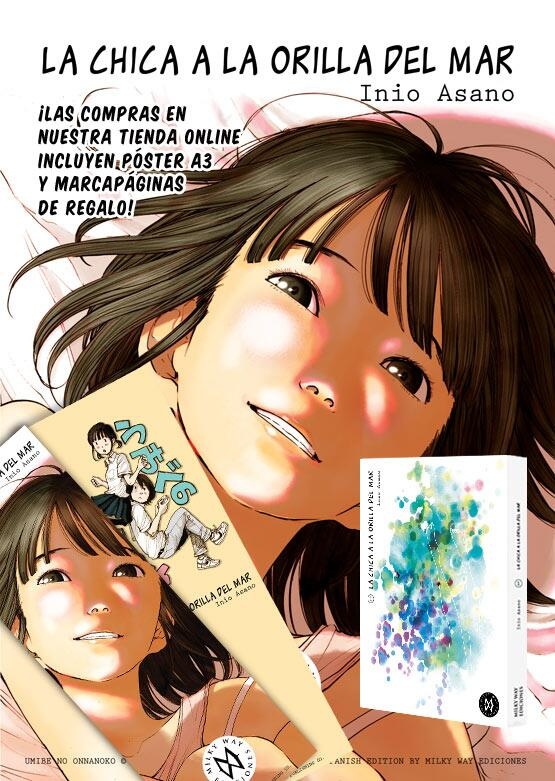
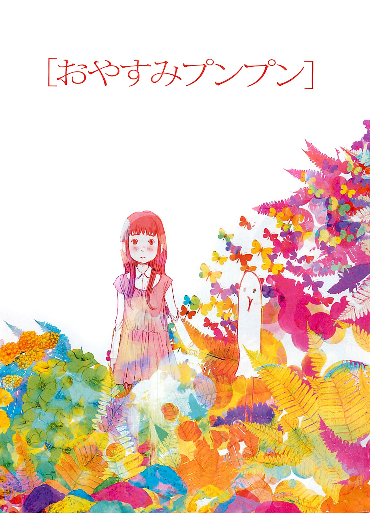
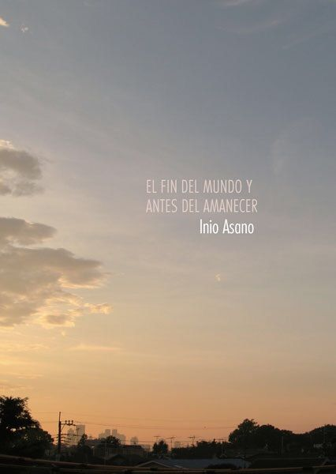

Berserk
Ficha y sinopsis
Título: Berserk
Género: Acción, Drama, Medieval, Fantacia
Demografía: Seinen
Capítulos: 315
Autor: Kento Miura
Año de emisión: 1989
Berserk se nos presenta en un tiempo medieval donde los humanos, enceguecidos por una sed de sangre y poder sometían sus vidas a una barbarie de guerras sin fin. La historia recuenta la vida de nuestro protagonista Guts, desde su nacimiento como un joven mercenario hasta convertirse en el temido "Espadachín negro"; el verdugo de demonios.
Kentaro Miura, creador de Berserk, nos entraga un mundo cruel e inhumano, un verdadero infierno sobre la tierra donde batallas interminables, oscuridad, sufrimiento y demonios sanguinarios conviven día a día con nuestro protagonista principal condenado a una vida bestial desafiando la muerte.
El argumento fundamental de esta historia radicará en su público adulto, una verdadera obra detallada y compleja, repleta de escenas de mutilaciones, sexo, depravaciones y enfrentamientos donde Guts no solo será testigo sino además partícipe.
bagar por los rincones del mundo para encontran la venganza deseada por tanto timepo se convirtio en su unico objetivo
sin embargo los hilos del destino no son complacientes por lo que se vera forzado a cambiar de objetivo
Ver Parasyte
Ver Portada
La chica a la orilla del mar
Ficha y sinopsis
Título: La chica a la orilla del mar
Género: Romance, Escolar, Drama
Demografía: Seinen Ero
Capítulos:
Autor: Inio Asano
Año de emisión: 2009
En la obra de Asano, la forma en la que se trata el odio hacia nosotros mismos se basa en la frustración, la auto destrucción y la proyección en los demás.
Youme es incapaz de besar a Isobe porque no soporta tener que perder el control de la situación que ya se le hace difícil sin tener la necesidad de plantearse nada. Isobe, por otra parte, se comporta como un inadaptado porque se siente culpable por el suicidio de su hermano mayor, convirtiéndose en una sombra de pasividad injusta, acechante y malhumorada en muchos casos.
Puede que no lo sepas aún, pero esto va sobre sexo. Sí, sorprendente ver eso en el mundo del manga, ¿no? Pues claro que no, hombre, aquí no hay hentai, hecho para el disfrute y deleite de su clientela. Aquí cada página que muestre ese tipo de cosas viene cargada con sentimientos negativos, con el pensamiento de que lo están haciendo por la necesidad de calmar sus peores lados que por el hecho de necesitarse el uno del otro. Siempre hay algo de qué hablar, nunca se están callados durante el acto, hay, vida en ellos.
Ver Parasyte
Ver Portada

Oyasumi Punpun
Ficha y sinopsis
Título: Oyasumi Punpun
Género: Drama, Trajedia,
Demografía: Seinen
Capítulos: 13 tomos
Autor: Inio Asano
Año de emisión: 2007
La vida de Onodera Punpun era tranquila (dejando de lado su familia disfuncional) hasta que conoció a Aiko Tanaka, Punpun se enamora de ella y la sigue, así es como se conocen, al pasar tiempo juntos y jugar con sus amigos se hacen más cercanos pero cuando Aiko descubre que Punpun le mintió lo amenaza con matarlo si le vuelve a mentir, ya que Punpun tenía miedo de morir y por los sentimientos que Aiko le producía, acepta cuando Aiko le propone escapar a Kagoshima. Pero por el intento de suicidio de su madre no pudo cumplir su promesa y se distanció de Aiko.
Estuvieron juntos hasta la secundaria etapa en la que Punpun tuvo otra oportunidad de escapar con Aiko pero la rechazó por sentirse culpable.
Es durante la preparatoria donde conoce a Sachi pero no de una manera muy significativa, es hasta su etapa adulta cuando establece un tipo de relación de trabajo (y un tanto amigos-novios) durante esta etapa vuelve a encontrarse con Aiko y comienzan una relación amorosa, después de un incidente (muy ilegal) intentan reaunudar su promesa de ir a Kagoshima.
Durante el transcurso de este viaje se desenvuelve el trágico final pero lo mejor de la historia.
Ver Parasyte
Ver Portada

El Fin del Mundo y Antes del Amanecer
Ficha y sinopsis
Título: El Fin del Mundo y Antes del Amanecer
Género: Drama, Future
Demografía: Seinen
Capítulos: 12 tomos
Autor: Inio Asano
Año de emisión: 2011
Se trata de un manga recopilatorio de varias historias cortas, las cuales se deben leer con bastante calma si se quieren entender totalmente.
Nos cuenta los sucesos ocurridos en una noche, "antes del amanecer" (nombre del relato, ya que este ocurre por la noche hasta justo antes del alba).
Luego se suceden otros relatos como "Alfalfa", "17", "La Rutina y la depresión de la imaginativa Eiko", "Cómo pasar un día festivo", "Tokio", "Domingo, 6:30 de la tarde" (este son tres capítulos), entre otros.
En la mayoría de ellos se nos muestran los problemas que tienen jóvenes (o no tan jóvenes) y como tratan de enfrentarse a los mismos, algunos mejor, otros peor.
No voy a poner personajes, por el simple hecho de que a veces ni siquiera mencionan sus nombres.
Ver Parasyte
Ver Portada
